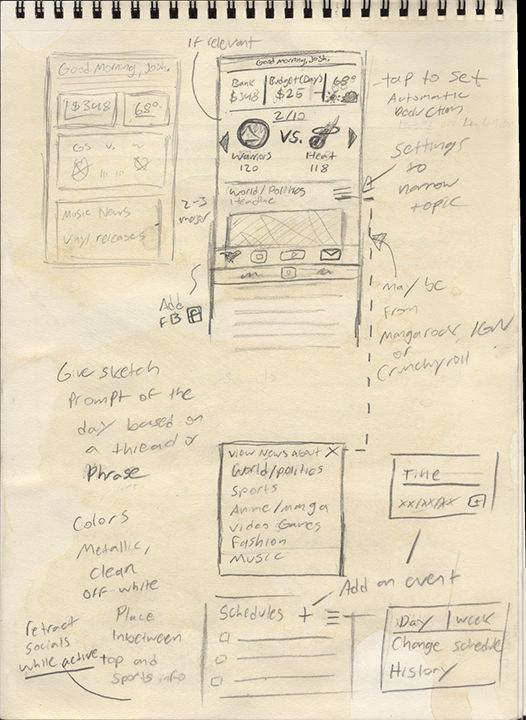
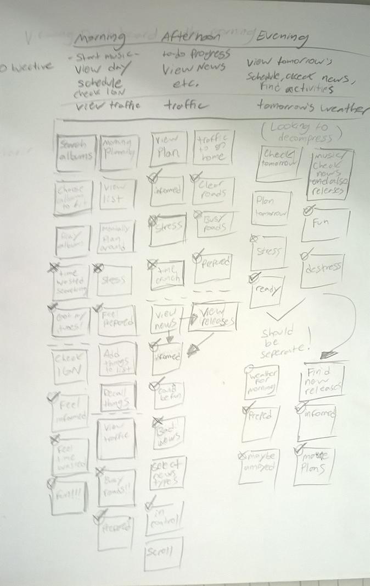
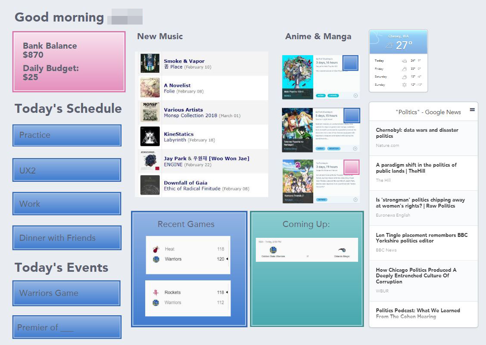
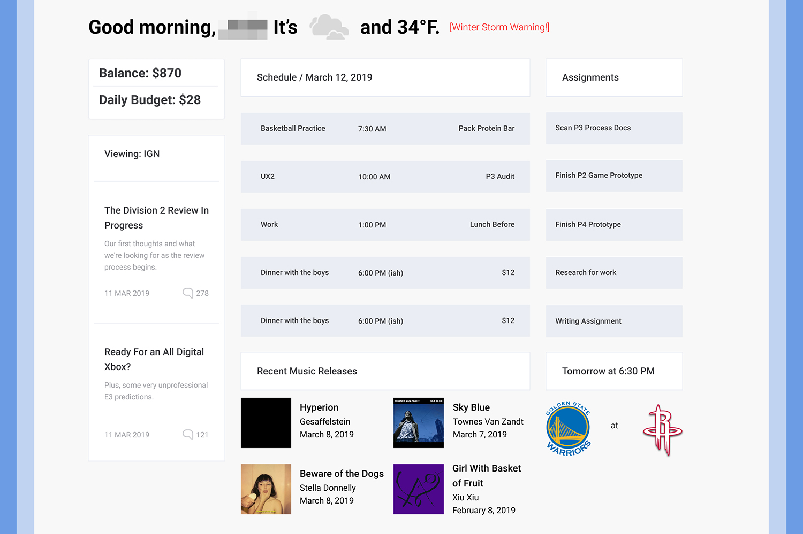
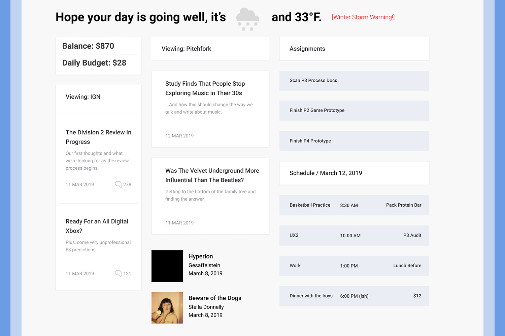
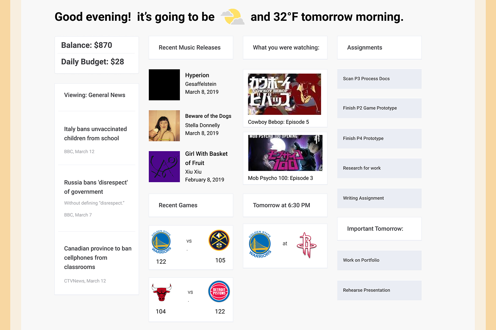

{kind=link}
mocking up a dashboard
bespoke dashboard project
This project was an exercise in building an experience around a specific schedule, in this case an individual who we’ll simply refer to as “J” for privacy reasons. At the time of this project, J was a design student attending Eastern Washington University who worked a part-time design job in Spokane Valley. No, I am not J. Performing an exercise like this on myself would be pointless. The main deliverable of this project was a dashboard based on a design framework of my choosing; in this case I chose to work with a Sketch/Figma framework called “Dashboard UI Kit,” not to be confused with UI Kit, the CSS framework that I used to create this site. An individual is a very specific audience to design for, just about as specific as you can possibly get, but the skill of designing for a small subset is easily transferable. The goal here to build around this small audience with their needs in mind. The dashboard was meant to serve that individual’s purposes; what type of things do they need to see? When and where do they need to see it? What time of day are they going to be looking at this dashboard? These are only some of the questions that needed to be asked in order to figure out the proper content for this project.

J prepared a photographic persona of his interests using objects around his apartment that he identifies with. This helped me gain a better understanding of the type of things he might need to see on his dashboard.
Through this image we can get an idea of J’s general interests. In the interview following the handoff of this persona I got to dig deeper into what was shown in the image. As we can, he collects vinyl records and has a minor interest in fashion. This isn’t prevalent enough to make a prominent feature. We can also see an interest in basketball, which was reinforced in the interview where I discovered that he is on the school’s basketball team. We can also see a deep interest in anime, manga, and sketching. We can see that he plays video games and is interested in gaming culture because he has the first issue of “A Profound Waste of Time,” an infrequently produced gaming journal, as well as Playstation 4 controller. In the interview I found out that he keeps up with the seasonal releases of anime very carefully and watches all the discourse at the beginning of each season. I’m not into anime, so more research on how exactly this would impact the dashboard was needed. I found that, in general, anime is released by studios in batches spaced 3 months apart (by season). This leads to large “backlogs” for people to keep up with and large amounts of activity in bursts throughout the year. He keeps up with new sites for gaming and anime and keeps an eye on quite a few Instagram pages about both topics. He frequents IGN, CrunchyRoll, and Manga Rock for news as well as general news media through Reddit’s /r/worldnews and /r/news and random news sites.
With this snapshot and interview done, I attempted to figure out what he would need on his dashboard. I did some rapid sketching to figure out content, where it should be located, and at what time of day, since in his interview he indicated that he would like more work-related stuff in the morning and more leisure content at night. He also stated that he would like to see the next morning’s weather at night, just in case he needs to get up early to warm up his car or something similar. I created an experience map to figure out what J might need or want to see at different points in the day, separated into three distinct time sections. Ideally, I should have done a few more and created an experience map for weekend use.
I created a rapid prototype of the layout of the dashboard and sought out feedback from J. This rapid prototype was just meant to communicate the broad idea of the dashboard. The version shown here is intended for large screens, such as smart mirrors or a similar display. Give it a few more years, smart mirrors are going to be a more common thing (probably). It could also be displayed on a television screen or something similar, which is most likely what our friend J would be using. J indicted the content was going in the right direction, but the layout was going to need some adjustments for the final version.
Utilizing my design framework’s style guide, I created a screen for each phase of the dashboard to express the changes that would happen to it over the course of the day. These screen layouts were based on my rapid prototype but take on a much more refined appearance. I developed them with a specific day in mind, March 12, so that I could create the dashboard with real content instead of placeholders. The dashboard is based on the requirements of the design system put in place by my framework, using the resources available through the framework’s sketch file.
The morning phase of the board was created with scheduling and assignment reminders as the primary features, with a bit of news to get him in the loop that morning. In the app that would ideally be correlated with this dashboard, J would be able to set up schedule these events and input these assignments, including an optional note relating to each scheduled event. The weather is given, including warnings (March 12 had a winter storm warning), and his bank balance is displayed with a daily budget of his choice to help with financial responsibility. The music releases give him some suggestions of things to listen to on his long commute from Liberty Lake, WA, to Cheney, WA, and back again. All of this information is available through various APIs, so if this were to be coded it wouldn’t be unreasonable to implement many of these features.
The afternoon phase is going to take the place of the morning phase at around lunch time (he could set what this exact time is on the app). The afternoon phase has reduced the schedule reminders and assignments, because at this point in the day he will likely already have a mental plan for the rest of the day. This is also because I made the leisure content take up a bit more space on the dashboard since he would want to use those features more around lunch time. This isn’t something I learned directly from my interview with J, but it just made sense for somebody to want to have more fun during their lunch hour.
The evening’s dashboard is dominated by leisure content, reminding him of what anime he had been watching in the previous nights and bringing back information about college basketball games that have happened or were going to happen. He indicated a great deal of interests in making sure that some basic information about this was displayed, at least to remind him to go check details or watch replays from the games. The assignments are maintained just in case he must do some work at home and the scheduling is now showing events from the next day to help him plan his day out.
After showing him these dashboard prototypes, he was very satisfied with the content and only requested some minor adjustments to the organization of the pages (making the locations of the information more consistent). I made those changes, which were the versions you just viewed. The next step of the project would be to prototype the Android app counterpart to this dashboard and them develop both elements. The point of this project was not to “develop” the app, but rather to develop the critical thinking skills required to tailor a whole experience to a single person. Dashboard design is also very common, almost every physical location has some form of dashboard. The bus stations, hospitals, malls, etc. all have dashboard elements that can usually be improved upon because they do not take the context in which they are displayed into account. This exercise helped me figure out how to design around those circumstances and be empathetic to the needs of the people who are going to use these dashboards.
Thanks for reading!
— Justice